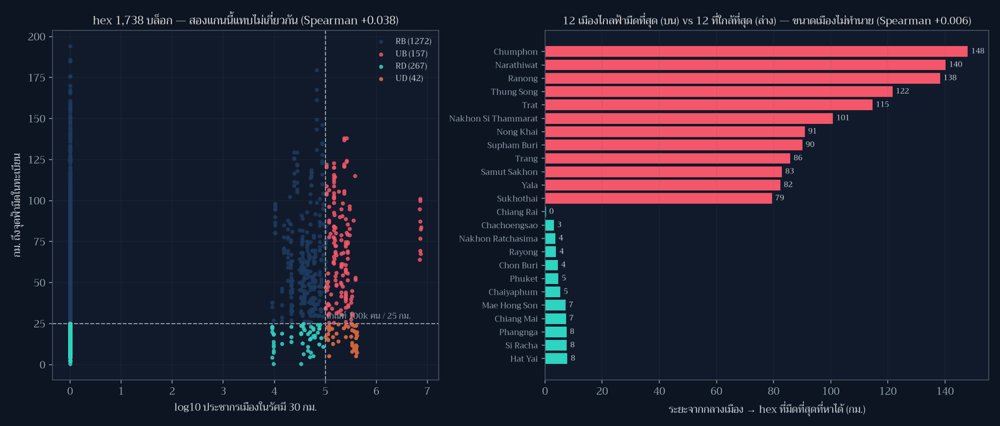

Day 9 · Urban-rural — เมืองกับชนบทเห็นฟ้าเดียวกันไหม (คำตอบ: เส้นแบ่งนี้ใช้ทำนายไม่ได้)

โจทย์ทางการวันนี้คือ “Urban or rural. Cities and countryside.” และสมมติฐานที่ผม (กับคนทำแผนที่ ส่วนใหญ่) ตั้งไว้ก่อนเปิดข้อมูลคือ เมืองสว่าง ชนบทมืด — ซึ่งฟังดูจริงจนไม่ต้องตรวจ แผ่นนี้จึงเป็นโพสต์ที่เกี่ยวกับ “สมมติฐานที่สวยที่สุดที่ผมต้องทิ้ง”
ที่มาของแผนที่
ผมวัดสองแกนบน hex grid เดิมของ Day 3 (1,738 บล็อก) แล้วจับมันตีกันเป็นสี่กลุ่ม
| แกน | นิยาม | เกณฑ์ |
|---|---|---|
| ความเป็นเมือง | ผลรวมประชากรเมือง (Natural Earth POP_MAX) ที่อยู่ในรัศมี 30 กม. ของ hex |
≥ 100,000 คน = “เมือง” |
| ความมืด | km_nearest จาก Day 3 = ระยะถึงจุดอนุรักษ์ท้องฟ้ามืดในทะเบียน NARIT |
≤ 25 กม. = “มืด” |
แล้วตั้งคำถามที่สองที่เป็นคำถามของประชาชนมากกว่า: จากกลางเมืองแต่ละแห่ง ต้องออกเดินทางกี่กิโลเมตร จึงจะถึง hex ที่จัดว่ามืด (วัดด้วย haversine จากจุดศูนย์กลางเมือง 79 แห่งไปยัง hex มืดทุกบล็อก)
ผลลัพธ์

1. เส้นแบ่งเมือง/ชนบททำนายความมืดไม่ได้เลย — Spearman ระหว่างแรงกดดันเมืองกับระยะสู่จุดฟ้ามืด ที่ระดับ hex = +0.038 และที่ระดับเมือง (ระยะที่ต้องเดินทาง vs log ประชากร) = +0.006 พูดภาษาคน: เมืองใหญ่ไม่ได้ไกลฟ้ามืดกว่าเมืองเล็กอย่างเป็นระบบ และ hex ที่ใกล้เมืองก็ไม่ได้สว่างกว่า hex ที่ไกลเมือง อย่างเป็นระบบเช่นกัน
2. แต่ “ที่ที่ทั้งมืดและใกล้คน” แทบไม่มีอยู่จริง — นี่คือตัวเลขที่ทำนายใหม่ทั้งหมด
| กลุ่ม | จำนวน hex | พื้นที่ |
|---|---|---|
| ชนบท · ยังไม่มืด | 1,272 | 363,099 ตร.กม. |
| ชนบท · มืด | 267 | 76,629 ตร.กม. |
| เมือง · ยังไม่มืด | 157 | 45,323 ตร.กม. |
| เมือง · มืด | 42 | 11,814 ตร.กม. |
| ที่ที่ใกล้ประชากร 500,000 คน (ใน 30 กม.) และ มืด | 0 | — |
แปลว่าความมืดกับประชากรไม่ได้ ต่อต้าน กัน (correlation ≈ 0) แต่ ไม่ได้อยู่ที่เดียวกัน — จุดที่มืดกระจายแบบสุ่มต่อความหนาแน่นคน เพราะทะเบียน 83 จุดถูกตั้งด้วยเหตุผลอื่น (อุทยานฯ หอดูดาว สถานศึกษา) ไม่ใช่ด้วยจำนวนประชากรรอบข้าง ตามที่ Day 3 เคยพบว่าไม่มีที่ใดไกลเกิน 200 กม.
3. ระยะเดินทางจากกลางเมืองสู่ฟ้ามืด (มัธยฐาน 39.2 กม.)
| เมือง | ระยะสู่ hex มืด |
|---|---|
| เชียงราย (ใกล้ที่สุด) | 0.3 กม. — ตัวเมืองติดเขตฟ้ามืดเลย |
| กรุงเทพ (6.7 ล้านคน) | 63.3 กม. |
| ชุมพร (ไกลที่สุด) | 148.0 กม. |
15 เมืองจาก 79 อยู่ชิด hex มืดภายใน 10 กม. และมี 6 เมืองที่ต้องไปไกลเกิน 100 กม. และในกลุ่มที่ ใกล้ที่สุด ก็มีเมืองใหญ่อยู่ด้วย: ฉะเชิงเทรา 3.0 · นครราชสีมา 3.6 · ระยอง 3.9 · ชลบุรี 4.5 กม. — แปลว่า “เมืองกับฟ้ามืดอยู่ด้วยกันได้” ถ้าจุดทะเบียนถูกวางไว้ใกล้เมือง
ข้อสังเกตที่ผมไม่คาดคิด: เมืองที่ไกลฟ้ามืดที่สุด 5 ใน 6 แห่งอยู่ภาคใต้ (ชุมพร 148 · นราธิวาส 140 · ระนอง 138 · ทุ่งสง 122 · นครศรีธรรมราช 101 กม.) อีกแห่งคือตราด 115 กม. และส่วนใหญ่เป็นเมืองเล็ก (ระนอง 24,561 คน · ชุมพร 85,686 คน) เพราะทะเบียนจุดฟ้ามืดลงใต้บางมาก — นี่คือปัญหาของ “ทะเบียน” ไม่ใช่ปัญหาของ “เมือง”

วิธีทำแบบย่อ
ขั้นที่ 1: แรงกดดันเมืองเป็นเมทริกซ์ระยะทาง ไม่ใช่ join
D = hav_km(cen, city) # (1738 x 79) กม.
urban_press = (D <= 30) @ pop # นับเฉพาะเมืองในรัศมี 30 กม. แล้วรวมประชากร
is_urban = urban_press >= 100_000
is_dark = km <= 25
quad = np.select([is_urban & is_dark, is_urban & ~is_dark, ~is_urban & is_dark],
["UD", "UB", "RD"], default="RB")ขั้นที่ 2: คำถามฝั่งประชาชน = min over dark hexes
ctd = hav_km(city, cen[is_dark]).min(axis=1) # จากกลางเมือง → hex มืดที่ใกล้สุดขั้นที่ 3: ตั้ง guard ก่อนวาด (บทเรียนจาก Day 7 ที่รอบนี้เจออีก)
assert set(np.unique(quad)) == {"UD", "UB", "RD", "RB"}
assert int(((urban_press >= 500_000) & is_dark).sum()) == 0 # ข้ออ้างในโพสต์ต้อง check ได้
# ในประเทศเดียว ระยะเมือง→hex ต้องไม่เกิน ~1,000 กม.
assert ctd.max() < 1000, "check haversine"สองบรรทัดสุดท้ายไม่ใช่ของตกแต่ง — ระหว่างทำรอบนี้ผมพิมพ์สูตร haversine ผิดหนึ่งตัว (lo2-la1 เป็น lo1) ได้ระยะ 10,000 กม. โดยไม่มี error ใด ๆ ถ้าไม่มี bound ข้อนี้ แผนที่จะออกมาสวยและโกหกทั้งแผ่น
ข้อจำกัดที่ต้องบอกตรง ๆ
- ความมืดเป็น proxy ที่วนตัวเอง เหมือน Day 8:
km_nearestคือระยะถึง ทะเบียน ไม่ใช่ค่าวัดแสง ดังนั้น “เมือง·มืด 42 บล็อก” แปลว่า “ใกล้เมืองและใกล้จุดในทะเบียน” ไม่ใช่ “ใกล้เมืองแล้วฟ้ามืดจริง” - ประชากร 14.1 ล้านคน = เฉพาะเมืองใน Natural Earth ไม่ใช่ประชากรไทยทั้งประเทศ (~66 ล้าน) คนที่อยู่นอกเมืองเหล่านี้ถูกนับเป็น “ชนบท” ทั้งหมด ซึ่งอาจทำให้แกนเมืองอ่อนเกินจริง
- ระยะทางเป็นเส้นตรง ไม่มีถนน ไม่มีเทือกเขา ไม่มีแม่น้ำ
- เกณฑ์ 100,000 คน / 30 กม. เป็น การตัดสินใจของผู้ทำแผนที่ ไม่ใช่ข้อเท็จจริง — เปลี่ยนเกณฑ์แล้ว สัดส่วนสี่กลุ่มเปลี่ยนทันที ผมจึงรายงานตัวเลข ทุกกลุ่มแทนที่จะรายงานแค่ข้อสรุป (ทดสอบแล้ว: เกณฑ์ 30,000 คน → hex เป็นเมือง 451 บล็อก และเมือง·มืด 75 บล็อก · 100,000 คน → 199 / 42 · 500,000 คน → 10 / 0)
ไฟล์ประกอบ
- day09_hex_classes.geojson — hex 1,738 บล็อกพร้อม
km_nearest,urban_pop_30km,quadrant - day09_stats.json — สี่กลุ่ม, Spearman, ระยะของแต่ละเมือง, เกณฑ์ที่ใช้ทั้งหมด
บทเรียน
- สมมติฐานที่สวยที่สุดต้องถูกตรวจก่อนวาด — “เมืองสว่าง ชนบทมืด” เป็นประโยคที่ผมจะพิมพ์ลงโพสต์ โดยไม่คิดถ้าไม่วัด Spearman จริง และมันเกือบผิดทั้งแผ่น ความสัมพันธ์เกือบศูนย์แต่ พื้นที่ทับซ้อน เป็นศูนย์ ซึ่งเป็นคนละปัญหาและต้องการคนละนโยบาย
- correlation ≈ 0 ไม่ได้แปลว่าไม่มีปัญหา — มันแปลว่าปัญหาไม่ใช่เส้นตรง เมืองไม่ใช่สาเหตุของ ความสว่าง และชนบทไม่ใช่ที่เก็บความมืด ปัญหาอยู่ที่ การจัดวางทะเบียน ไม่ได้ออกแบบมาเพื่อคน (ซึ่งต่อตรงกับ Day 8 ที่พบว่าการเพิ่มจุด 15 จุดเปลี่ยนชีวิตคน 12 ล้านคน)
- ขนาด marker บนแผนที่ต้องประกาศนิยามเสมอ — แผ่นนี้จุดขาวมีขนาด = ระยะทางที่ต้องเดินทาง ไม่ใช่ประชากร (ซึ่งคนอ่านจะเดาว่าเป็นประชากรโดยอัตโนมัติ) ผมเขียนไว้ใน legend แล้ว
- geometry ที่ไม่สม่ำเสมอทำโค้ดพังเงียบ ๆ — hex ที่ clip ขอบประเทศแล้วกลายเป็น MultiPolygon ทำให้
g.exteriorพัง และตอน export geojson ก็ต้องเปลี่ยนไปใช้shapely.geometry.mapping()บทเรียน: เขียน helper ที่รองรับทั้งสองแบบตั้งแต่แรก อย่าสมมติว่าทุก geometry เป็น Polygon - ใช้ Natural Earth 10m ทั้งขอบประเทศและข้อมูลเมือง ตามมาตรฐานที่ตั้งไว้ตั้งแต่ Day 8 ✓
พรุ่งนี้ธีม Prompting only (Day 10) — วันที่ต้องทำงานจาก prompt ล้วน ๆ ซึ่งน่าจะเป็นวันที่ ผมจะได้ทดสอบว่าสิ่งที่เรียนรู้ 9 วันที่ผ่านมาส่งต่อให้โมเดลทำต่อได้แค่ไหน 🗺️